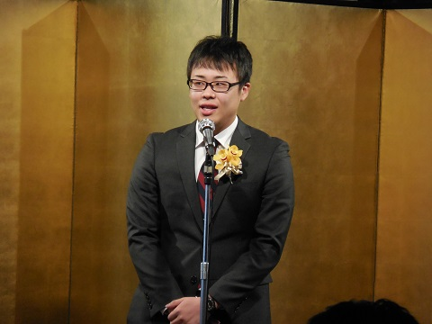
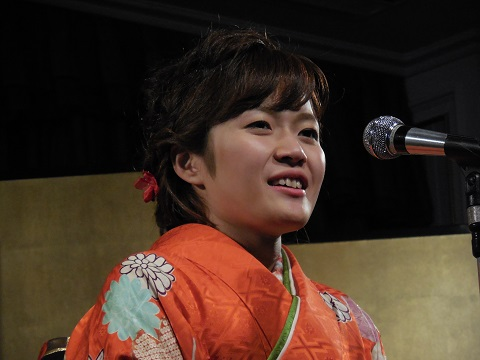
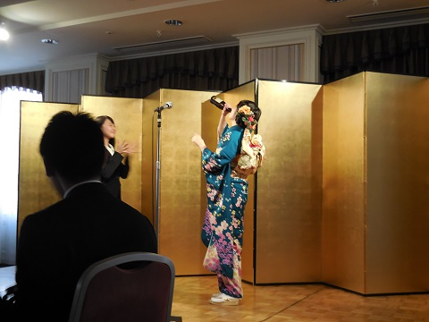
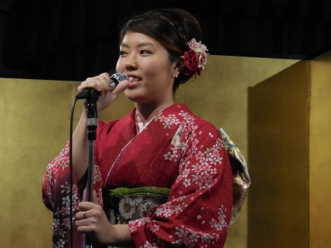
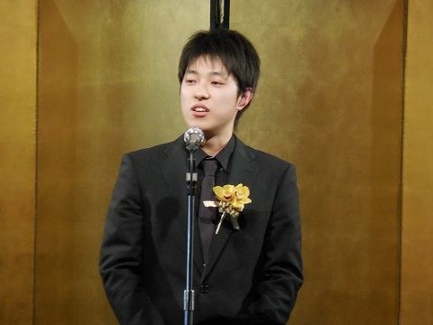
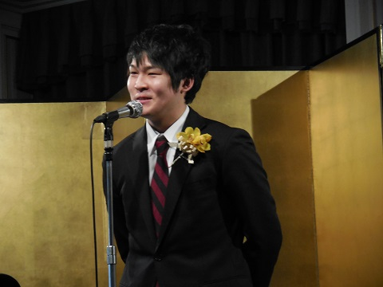
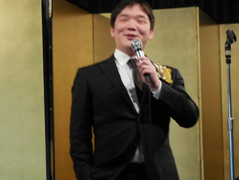
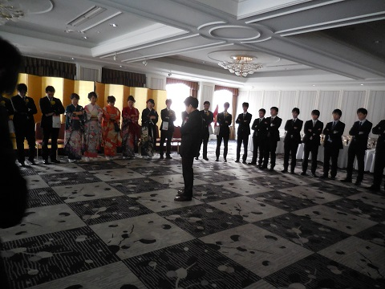
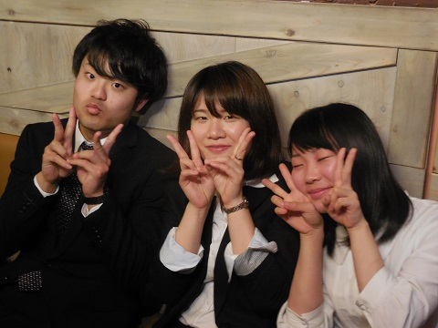
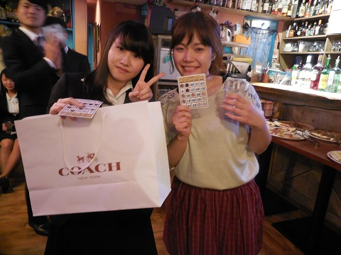

２/２８～３/１に行われた４泊５日の春合宿の写真です。
※学年は春合宿時のものになります。
さてさて４日目です。今日は会内試合。対戦表の準備をしてくれてます。 

チーム名と各個人のあだ名。ひどい(確信) 
開会式。 

いよいよ試合開始！ 
杉山vs西川 
観戦なう。 
ここで勃発した垂れネーム交換会。もはや誰だこいつ(１年・山崎) 
そのまま試合出ちゃうのね…。 大塚(の垂れネームを付けた人)が強そう。 
主将、一女に試合で負けて平伏するの巻。 
怪我を押して出場、石川四段。貫禄。 
上段にチャレンジした田伏先輩(前主将)。この後(赤尾の垂れネームを付けた)藤本に小手をとられ敗北。藤本輝いてたね。 
結果です。 
まずは最下位から。 
一番楽しそうに映ってた気がする…。 
一位おめでとうございます。  


 

  

 
  
最後の締めはやっぱり松本先輩。 
記念品の贈呈です。  
集合写真を撮り、  人生劇場、紺碧の空、校歌を斉唱。 
2次会のテンションはこんな感じを想像していただければおおよそ合ってます（たぶん）  2年生の楽しい様子を撮りたかったんですが人選を失敗したことをわたくしとても後悔しております。右は完璧に酔っ払い。 
恒例のビンゴ大会。あげる側の玉置先輩が早々とビンゴ宣言しました。無欲の勝利…。  ビンゴした人が早い者順で景品を頂く先輩を指名します。原田先輩の景品は信者の手に渡ることなく終わりました。 
二重の運試しにまさかの一発勝利をおさめた田中先輩。諭吉さんと縁があったんですかね！早稲田ですが。 
今回一番の当たりだったんではないかと噂の松本先輩の景品。良い袴を贈ってくださるとかまじか太っ腹。 
その後のご使用感はいかがですかとか聞いたらいけないやつです。 
楽しい2次会も終わり3次会の始まりです。 以上で追いコンの写真は終了です。3次会は諸事情（便利な言葉ですね）で省略されました。それでもこの量。恐ろしい子…。何はともあれ、この会が50期の先輩方の思い出の一つになっていれば幸いです！！ (※写真へのコメントは全て管理人がしております。) |